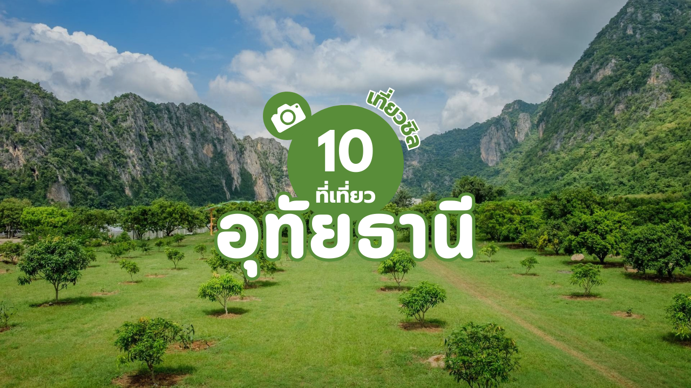

วัดจันทาราม หรือ วัดท่าซุง วัดสวยอุทัยธานีแห่งนี้ ถือว่าเป็นสถานที่ท่องเที่ยวสำคัญประจำจังหวัดอุทัยธานี จุดเด่นของที่นี่คือ วิหารแก้ว 100 เมตร ด้านในวิหารมีโลงบรรจุองค์หลวงพ่อฤาษีลิงดำ ซึ่งเป็นที่ศรัทธานับถือของประชาชนทั่วไป และพระพุทธชินราชจำลอง ให้เราได้สักการะขอพร
บทความแนะนำที่ท่องเที่ยว /
10 ที่เที่ยวอุทัยธานี สัมผัสธรรมชาติครบจบทั้งในและนอกเมือง!
10 ที่เที่ยวอุทัยธานี สัมผัสธรรมชาติครบจบทั้งในและนอกเมือง!

ที่เที่ยวอุทัยธานี พิกัดสวย สุดชิล ฟิลลิ่งดีโครตๆ
1. วัดจันทาราม วัดท่าซุง

- ที่อยู่ : หมู่ 2 ตำบลน้ำซึม อำเภอเมือง จังหวัดอุทัยธานี
- พิกัด : https://maps.app.goo.gl/VM74CDrbnE5aLP1x8
- เปิดให้เข้าชม : 08.00-16.00 น.
=================
2. เขาสะแกกรัง
เขาสะแกกรัง เดิมที่นี่เคยถูกเรียกว่า เขาแก้ว ปัจจุบันเขาสะแกกรังเป็นสถานที่ที่ชาวอุทัยธานีนับถือ และนิยมเดินทางมากราบไหว้ทำบุญ ขึ้นบันได 449 ขั้น สู่ยอดเขาสะแกกรัง อีกทั้งด้านบนยอดเขายังเป็นที่ประดิษฐานพระพุทธบาทจำลอง และเป็นจุดมวิวสวยๆ ของอุทัยธานี และยังเป็นที่ตั้งของ วัดสังกัสรัตนคีรี วัดเก่าแก่ที่สร้างตั้งแต่ปี พ.ศ. 2443 ที่ประดิษฐานของพระพุทธมงคลศักดิ์สิทธิ์ ปางมารวิชัย อายุ 600 - 700 ปี เป็นพระคู่บ้านคู่เมืองของอุทัยธานีมาตั้งแต่สมัยรัตนโกสินทร์ตอนต้น
- ที่อยู่ : อำเภอเมืองอุทัยธานี จังหวัดอุทัยธานี
- พิกัด : https://maps.app.goo.gl/pkw3kdmZDo3zrHc68
- เปิดให้เข้าชม : 06.00-20.00 น.
=================
3. วัดอุโปสถาราม
หนึ่งวัดที่สำคัญประจำจังหวัดอุทัยธานี ก็คือ วัดอุโปสถาราม แห่งนี้ เดิมมีชื่อเรียกว่า วัดโบสถ์มโนรมย์ ตั้งอยู่ริมแม่น้ำสะแกกรัง ถือได้ว่าเป็นศาสนสถานเก่าแก่อีกแห่งหนึ่งเลยก็ว่าได้ ภายในมีจิตรกรรมฝาผนังในโบสถ์และวิหาร เป็นภาพเขียนสมัยรัตนโกสินทร์ตอนต้น คือภาพพระพุทธเจ้าเสด็จโปรดเทพยดาบนสวรรค์และภาพปลงสังขาร ที่สวยงามมากๆ รวมถึงมีมณฑปแปดเหลี่ยมที่งดงามไม่แพ้กันด้วย
- ที่อยู่ : ตำบลสะแกกรัง อำเภอเมือง จังหวัดอุทัยธานี
- พิกัด : https://maps.app.goo.gl/TWZ6jvor8EKzkesXA
- เปิดให้เข้าชม : 08.30-16.30 น.
=================
4. หุบป่าตาด
นอกจากวัดสวยแล้ว ที่นี่จังหวัดอุทัยธานียังมีสถานที่ทางธรรมชาติที่สวยงามเช่นเดียวกันอย่าง หุบป่าตาด โดยที่นี่จะให้ความรู้สึกแบบป่าโบราณเหมือนในหนังจูราสิคปาร์คเลยทีเดียว ใครที่เป็นแฟนคลับหนังไดโนเสาร์แล้วล่ะก็จะต้องฟินอย่างแน่นอน ในป่าแห่งนี้ยังมีถ้ำลึกลับซ่อนตัวอยู่อีกด้วย ทุกคนสามารถเดินทะลุถ้ำได้ในระยะทางประมาณ 100 เมตร รวมไปถึงที่นี่ยังเป็นสถานที่ค้นพบกิ้งกือมังกรสีชมพูที่แรกอีกด้วย
- ที่อยู่ : เขตห้ามล่าสัตว์ป่าถ้ำประทุน หมู่ที่ 3 ตำบลทุ่งนางาม อำเภอลานสัก จังหวัดอุทัยธานี
- พิกัด : https://maps.app.goo.gl/4wb6oLuxdAYG757Q6
- เปิดให้เข้าชม : 08.30-16.30 น.
=================
5. เขตรักษาพันธุ์สัตว์ป่าห้วยขาแข้ง
ไปชื่นชมธรรมชาติกันบ้างกับ เขตรักษาพันธุ์สัตว์ป่าห้วยขาแข้ง เชื่อว่าหลายคนคงรู้จักที่นี่เป็นอย่างดี เพราะมีชื่อเสียงในทางธรรมชาติและสัตว์ป่า อีกทั้งป่าห้วยขาแข้งยังได้รับการขึ้นทะเบียนเป็นมรดกโลกในปี พ.ศ. 2534 ที่นี่มีพื้นที่ติดต่อกับเขตรักษาพันธุ์สัตว์ป่าทุ่งใหญ่นเรศวร ถือเป็นหนึ่งในหัวใจหลักของผืนป่าตะวันตกของประเทศไทย และเป็นผืนป่าที่ยังคงความอุดมสมบูรณ์ที่สุดแห่งหนึ่งของภูมิภาคเอเชียตะวันออกเฉียงใต้อีกด้วย
- ที่อยู่ : อำเภอลานสัก จังหวัดอุทัยธานี
- พิกัด : https://maps.app.goo.gl/Qci9HnZxEZwq5PV46
- เปิดให้เข้าชม : 08.00-17.00 น.
=================
6. วัดผาทั่ง
วัดผาทั่ง ภายในวัดแห่งนี้เป็นที่ตั้งของพระพุทธรูปองค์ใหญ่ที่สุดประจำจังหวัดอุทัยธานี หรือที่นักท่องเที่ยวเรียกกันว่า หลวงพ่อโต ซึ่งหลวงพ่อโตองค์ใหญ่นี้มีขนาดหน้าตักกว้าง 23 เมตร สูง 52 เมตร ปางประทานพร สร้างโดยแรงศรัทธาของคณะศิษย์สมเด็จพระพุฒาจารย์ (โต พรหมรังสี) ในปีพ.ศ. 2532 เรียกได้ว่ามีขนาดใหญ่ติดอันดับต้นๆ ของเมืองไทยเลยทีเดียว
- ที่อยู่ : ตำบลห้วยแห้ง อำเภอบ้านไร่ จังหวัดอุทัยธานี
- พิกัด : https://maps.app.goo.gl/sijcPcPWJwK7QhVQ9
- เปิดให้เข้าชม : 06.00-18.00 น.
=================
7. น้ำตกผาร่มเย็น
ไปชุ่มฉ่ำ เล่นน้ำกันบ้างที่ น้ำตกผาร่มเย็น น้ำตกที่สวยที่สุดในอำเภอบ้านไร่ ที่นี่เป็นน้ำตกที่ไหลลงมาสายเดียวจากผาสูงสู่แอ่งน้ำด้านล่างเป็นสายบางๆ คล้ายกับสายฝนโดยผ่านหน้าผาดินที่มีมอสสีเขียวเกาะอยู่ ชาวอุทัยธานีนิยมพาครอบครัว มาพักผ่อน เล่นน้ำกันในช่วงวัดหยุดอีกด้วย ใครมีเวลาว่างสักครึ่งวัน เราแนะนำให้มากระโดดน้ำเล่นที่นี่
- ที่อยู่ : บ้านใหม่ร่มเย็น อำเภอบ้านไร่ จังหวัดอุทัยธานี
- พิกัด : https://goo.gl/maps/hGcbwTN8JnzrRW467
- เปิดให้เข้าชม : 08.30-17.00 น.
=================
8. ถ้ำพุหวาย
ถ้ำพุหวาย ถ้ำสวยประจำอุทัยธานี ที่นี่ถือเป็นถ้ำขนาดใหญ่ ภายในประกอบไปด้วยหินงอกหินย้อยมากมาย แถมรูปร่างก็แปลกตา สวยสง่าอีกด้วย ไม่ว่าจะเป็น เสาหินล้านปี หินทรงกลด เป็นต้น และไฮไลท์อีกอย่างนึงของที่นี่ก็คือ ยังเป็นที่อยู่อาศัยของเหล่าค้างคาว กว่า 9 สายพันธุ์เลยทีเดียว
- ที่อยู่ : ตำบลบ้านไร่ อำเภอบ้านไร่ จังหวัดอุทัยธานี
- พิกัด : https://goo.gl/maps/F1BBt9tYmbYMHQCS7
- เปิดให้เข้าชม : 08.30-17.00 น.
=================
9. วัดถ้ำเขาวง
วัดถ้ำเขาวง อีกวัดสวยชื่อดังของอุทัยธานี แถมแปลกตาด้วย ถ้าหากขับรถผ่านเฉยๆอาจจะคิดว่าที่นี่ไม่ใช่วัด ลักษณะของรูปทรงวัดที่นี่จะใช้วัสดุไม้สักทั้งหมดด้านหลังยังมีถ้ำขนาดใหญ่รายล้อมด้วยต้นไม้และธรรมชาตันอันเงียบสงบซึ่งที่นี่ก็ยังเป็นปฏิบัติธรรมท่ามกลางธรรมชาติด้วย เป็นวัดสวยที่งดงามแบบที่ว่าไม่น่าจะมีที่ไหนเหมือนแล้วจริงๆ
- ที่อยู่ : ตำบลบ้านไร่ อำเภอบ้านไร่ จังหวัดอุทัยธานี
- พิกัด : https://goo.gl/maps/uJjXeWfKMzRWBdy7A
- เปิดให้เข้าชม : 08.00-16.30 น.
=================
10. ตลาดซาวไฮ่
ตลาดซาวไฮ่ ตลาดนัดชุมชน ของอุทัยธานี ที่รวบรวมทั้งผลิตภัณฑ์ทางการเกษตร ผักผลไม้ตามฤดูกาลมากมาย รวมไปถึงงานดนตรีต่างๆ กาแฟดริป และงานคราฟท์ที่น่าสนใจ ซึ่งก็เป็นหนึ่งหนึ่งที่เที่ยวในอุทัยธานีที่ดึงดูดใจนักท่องเที่ยวมากๆ อีกทั้งเราจะได้เจอกับเหล่าเกษตรกรในท้องถิ่นที่จะนำพืชผักผลไม้ต่างมาขาย และเจอกันกับผู้บริโภคอย่างเราๆ ได้โดยตรง
- ที่อยู่ : 92 ตำบลบ้านไร่ อำเภอบ้านไร่ จังหวัดอุทัยธานี
- พิกัด : https://goo.gl/maps/cJx2Ffs4EruxWfZb7
- เปิดให้เข้าชม : วันเสาร์-อาทิตย์ 08.00-17.00 น.
=================